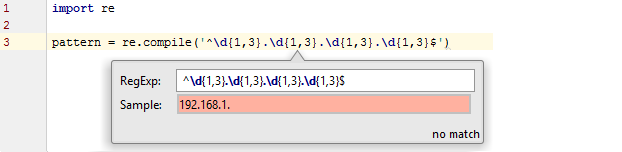
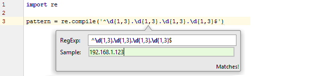

Regular expressions¶
Introduction¶
From Python documentation:
Regular expressions (called REs, or regexes, or regex patterns) are essentially a tiny, highly specialized programming language embedded inside Python and made available through theremodule. Using this little language, you specify the rules for the set of possible strings that you want to match; this set might contain English sentences, or e-mail addresses, or TeX commands, or anything you like. You can then ask questions such as “Does this string match the pattern?”, or “Is there a match for the pattern anywhere in this string?”. You can also use REs to modify a string or to split it apart in various ways.
Example regex¶
Let’s see a simple example of regex operation in Python
import re
message = "File saved at 17:23:57"
pattern = "\d\d:\d\d:\d\d" # \d is a digit
m = re.search(pattern, message)
if m: # would be None if no match is found
print(m.group())
Compiled regular expressions vs module-level functions¶
In Python you can use most of the regex operations in two ways
- as module-level functions of
remodule
def find_matching_message(pattern, list_of_messages):
for message in list_of_messages:
if re.search(pattern, message): # re.search will compile the regex on each iteration
return message
- or methods on compiled regular expression objects created with
re.compile()
def find_matching_message(pattern, list_of_messages):
my_regex = re.compile(pattern)
for message in list_of_messages:
if my_regex.search(message):
return message
For the sake of clarity and also some performance advantage, if the regex is going to be used multiple times, the second method (compile) is preferred.
Using groups() and unpacking to get multiple parts of the match¶
Assume that you have to process messages of the following structure
@Title: End of the world
@Event Type: Natural disaster
@Date: 21-12-2012
@Details: World is going to end
@Others: All participants are asked to stay calm and relax
To collect all the parts of the messages and save them in separate python variables, you can do the following
import re
message = get_message() # some message to process
message_pattern = re.compile('@Title: (.*)\n@Event Type: (.*)\n@Date: (.*)\n@Details: (.*)\n@Others: (.*)')
title, event_type, date, details, others = message_pattern.search(message).groups()
You can also access them separately with
title = message_pattern.search(message).group(1) # group indexing starts from 1
Using re.findall() to get a list of all matches¶
re.findall() returns a list of all matches within the string (does not stop on the first one).
If the pattern has more groups, it returns a list of tuples with each tuple containing the groups of the given match.
See also
For a more detailed introduction, read the excellent chapter on Python regular expressions in Automate the Boring Stuff with Python
Debugging regular expressions in PyCharm¶
To check the regular expressions with PyCharm, place the caret somewhere in
the regular expression string parameter of re.compile() and press Alt-Enter and select Check regex from the pop up list.
You can use the Sample field to see which strings match, and which don’t, your regular expression.
 Tip
For more complicated expressions and a better insight in some advanced parameters, you can use online debuggers like Regex101. (It offers a Python specific interpreter)